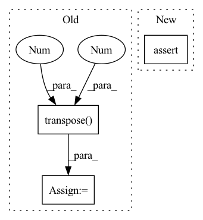

Pattern ID :2762
Before Change
raise ValueError(f"PatchEmbed module. Input image width ({W}) doesn"t match model ({self.img_size[1]}).")
x = self.proj(x)
if self.flatten:
x = x.flatten(2).transpose(1 , 2 ) // BCHW -> BNC
x = self.norm(x)
return xAfter Change
def forward(self, x):
B, C, H, W = x.shape
// FIXME look at relaxing size constraints
assert H == self.img_size[0] and W == self.img_size[1], \
f"Input image size ({H}*{W}) doesn"t match model ({self.img_size[0]}*{self.img_size[1]})."
x = self.proj(x).flatten(2).transpose(1, 2) // B Ph*Pw C
if self.norm is not None:In pattern: SUPERPATTERN
Frequency: 3
Non-data size: 3
Instances Fragment ID: 15463339
Project Name: eora-ai/torchok
Commit Name: ab2534f05b48a529d03f8c28af2579245772f4e0
Time: 2022-07-11
Author: rashit.bayazitov.1995@gmail.com
File Name: src/models/modules/blocks/patch_embedding.py
M Class Name: PatchEmbed
N Class Name: PatchEmbed
M Method Name: forward(2)
N Method Name: forward(2)
M Parent Class: nn.Module
N Parent Class: nn.Module
M File Name: src/models/modules/blocks/patch_embedding.py
N File Name: src/models/modules/blocks/patch_embedding.py
M Start Line: 30
M End Line: 37
N Start Line: 50
N End Line: 55
Before Change
// Back to batch first
attn_scores = torch.stack(attn_scores).transpose(0, 1)
mel_outputs = torch.stack(mel_outputs).transpose(0 , 1 ) .contiguous()
stop_tokens = torch.stack(stop_tokens).transpose(0, 1).squeeze(2)
// (B, T", mel_dim*r) -> (B, T, mel_dim)After Change
stop_tokens = torch.cat(stop_tokens, dim=1) // (B, T_decoder)
// Validation check
assert greedy or mel_outputs.size(1) == T_decoder
return mel_outputs, stop_tokens, attn_scores
Fragment ID: 15463338
Project Name: thuhcsi/tacotron
Commit Name: fea9ec535ec373aad564646f4f292fbee0217c29
Time: 2021-03-18
Author: johnson.tsing@gmail.com
File Name: model/tacotron.py
M Class Name: Decoder
N Class Name: Decoder
M Method Name: forward(4)
N Method Name: forward(4)
M Parent Class: nn.Module
N Parent Class: nn.Module
M File Name: model/tacotron.py
N File Name: model/tacotron.py
M Start Line: 87
M End Line: 187
N Start Line: 88
N End Line: 180
Before Change
// Back to batch first
attn_scores = torch.stack(attn_scores).transpose(0, 1)
mel_outputs = torch.stack(mel_outputs).transpose(0, 1).contiguous()
stop_tokens = torch.stack(stop_tokens).transpose(0 , 1 ) .squeeze(2)
// (B, T", mel_dim*r) -> (B, T, mel_dim)
mel_outputs = mel_outputs.reshape(B, -1, self.mel_dim)After Change
stop_tokens = torch.cat(stop_tokens, dim=1) // (B, T_decoder)
// Validation check
assert greedy or mel_outputs.size(1) == T_decoder
return mel_outputs, stop_tokens, attn_scores
Fragment ID: 15463347
Project Name: thuhcsi/tacotron
Commit Name: fea9ec535ec373aad564646f4f292fbee0217c29
Time: 2021-03-18
Author: johnson.tsing@gmail.com
File Name: model/tacotron2.py
M Class Name: Decoder
N Class Name: Decoder
M Method Name: forward(4)
N Method Name: forward(4)
M Parent Class: nn.Module
N Parent Class: nn.Module
M File Name: model/tacotron2.py
N File Name: model/tacotron2.py
M Start Line: 127
M End Line: 224
N Start Line: 127
N End Line: 216